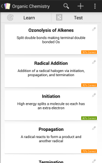

Cards
Introduction
A card contains a title (front side), details (a back side), and an
optional
image attachment. The image attachment can be chosen from the gallery, drawn, or taken with the
camera (if available)

Actions
 Adding a new Card: Tap the "+" icon, and enter the title and details. Optionally,
add an attacment, and tap "Create Card"s
Adding a new Card: Tap the "+" icon, and enter the title and details. Optionally,
add an attacment, and tap "Create Card"s
- Editing a Card: Tap the pencil icon on the Card that you want to
edit. Fill out any
information, and tap "Edit Card"
- Swaping Title and Details: Long press a Card to select, select any
other cards, and tap the Swap icon to swap the details and title.
- Archiving a Card: Simply swipe the card away to archive
- Archiving multiple Cards: Long press a Card to select, and
select other Cards to archive. Tap the trashcan icon
 Restoring a Card: Navigate to the overflow menu, select "Archived
Cards" and tap the Card to restore
Restoring a Card: Navigate to the overflow menu, select "Archived
Cards" and tap the Card to restore
- Deleting a Card: Swipe the stack away from the Archived Cards
window
Attachments
An attachment is a way to add visual information to a card. An attachment
can be either part of the title, or details. There are 3 types of attachments
- Gallery: Pick an existing image on your device. The image will be copied to the
attachment directory
- Draw: Draw simple images inside of the app
- Camera: Use the camera to take a picture and attach the image
Drawing
This feature allows you to sketch anything. Using the scrollable color
pallete to pick a pre-defined color, or use the custom color item to pick one. Use the "+" and
"-" buttons to change the stroke width to draw with. When you're done sketching, simply hit
save, and the drawing will be attached to your Card.